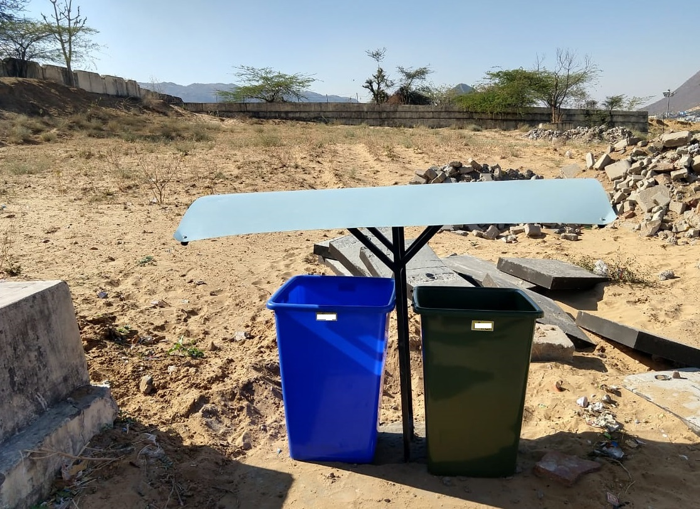
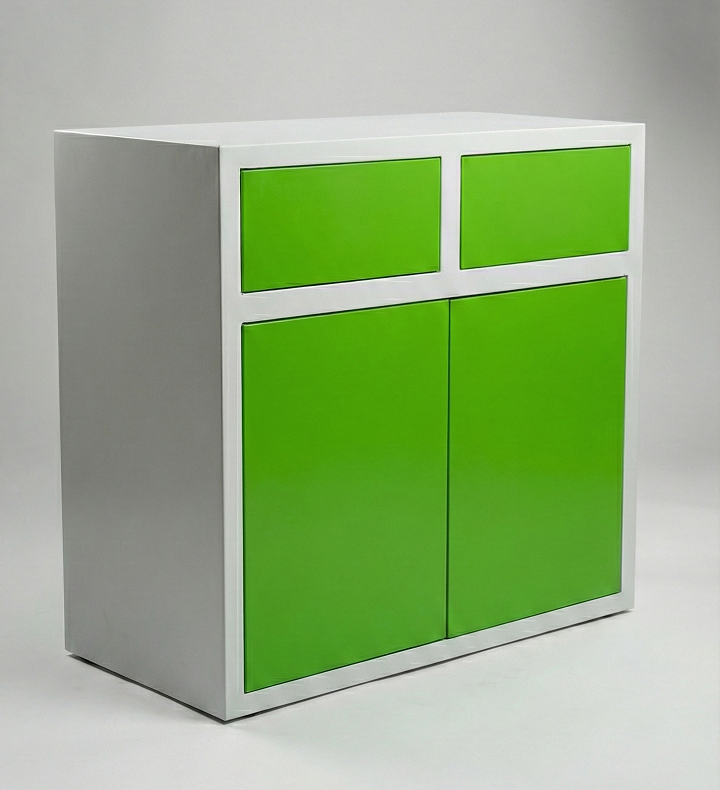
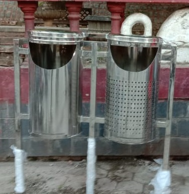
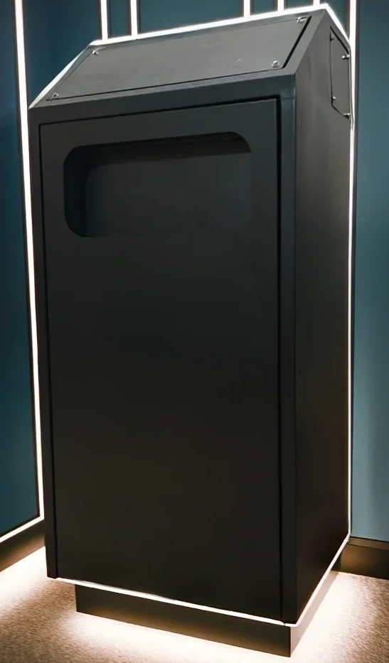
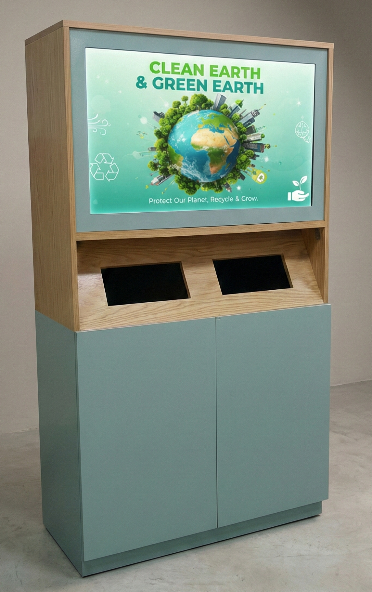
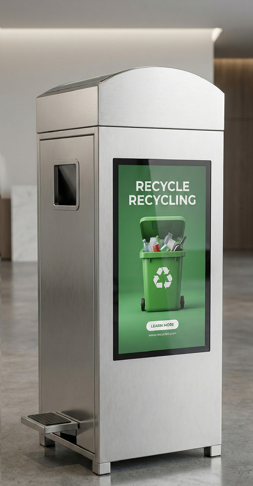
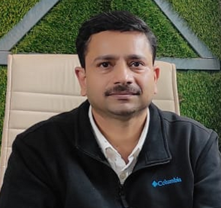

Because cities deserve infrastructure that is accountable — not fragile.
For decades, the dustbin has been passive and neglected — no data, no intelligence, no accountability. Public infrastructure fails and ESG reports rely on guesswork.
Aarush Eco Tech integrates environmental engineering, industrial IoT, and digital economics to transform static waste assets into intelligent, revenue-generating urban systems.
A waste system that is hard to find is a failed system. Our mandate is absolute ubiquity — bins as essential as streetlights, eliminating the very excuse to litter.
An Aarush unit is a smart node that aggregates raw materials, monitors its own health, and feeds the circular economy with pure, traceable inputs.
We engineer financial models where infrastructure pays for itself forever. Maximum ROI, zero dependence, permanent impact.
From deep-tech academic research to rugged industrial manufacturing. Witness the relentless engineering of the ultimate SmartBin.
Aarush Eco Tech is officially born with a singular vision: to redefine public waste management into a data-driven, Zero-CapEx utility.
Backed by India's premier deep-tech ecosystem at FIRST, IIT Kanpur, giving our environmental hardware world-class academic validation.
Selected and backed by the Citi Social Innovation Lab, accelerating our mandate to create measurable ESG impact at national scale.
First electronics and structural testing conducted in harsh, real-world outdoor environments to validate sensor durability.

Developed proprietary in-house PCBs for robust, failure-resistant data transmission. Evolved the physical form factor for better ergonomics.

Launched our centralized command platform. Turning raw bin data into actionable city intelligence, route optimization, and live ESG tracking.
Upgraded to premium, infrastructure-grade stainless steel. Engineered specifically to survive 10+ year lifespans in high-footfall public transit hubs.

Achieved flawless synergy between our custom PCB sensor arrays and cloud software suite, finalizing our real-time alert systems.

Deployed the ultimate model featuring premium digital displays. Unlocking the Green DOOH advertising network and maximizing CSR visibility.

After years of rigorous testing, we are rolling out contextual, infrastructure-grade solutions for India's diverse environments. One centralized dashboard. Three purpose-built form factors.

Solar-powered, ruggedized smart infrastructure designed for Smart Cities, Railway Stations, and public transit hubs.

Premium stainless steel finish with vibrant digital DOOH screens. Perfect for Malls, Airports, and high-value brand advertising.

The 'Bhoomi Patra'. Contextually designed to blend seamlessly into cultural, religious, and heritage tourism sites without disrupting the aesthetic.
Our leadership ensures that rigorous environmental science translates into rugged, deployable, and highly profitable public infrastructure.

Chief Executive Officer & Co-founder
An environmental engineer, innovator and researcher dedicated to pioneering smart city infrastructure. His expertise drives the research, patenting, and aggressive commercialization of Aarush Eco Tech.
Chief Technology Officer & Co-founder
The architectural force behind the hardware, IoT integration, and ESG algorithms that power our platform. He ensures our solar-powered sensor arrays deliver flawless 24/7 uptime.
Dean of R&D, IIT Kanpur | D.Sc., Harvard School of Public Health
To ensure our infrastructure meets the highest global standards for ESG impact, public health, and urban hygiene, Aarush Eco Tech is guided by unparalleled academic oversight. Dr. Gupta's world-class expertise acts as our compass, ensuring every data point and hardware claim withstands the deepest scrutiny of global audits.
Share your requirements and our team will get back within 24 hours.
By submitting you agree to be contacted by Aarush Eco Tech Pvt. Ltd. We do not share your data.